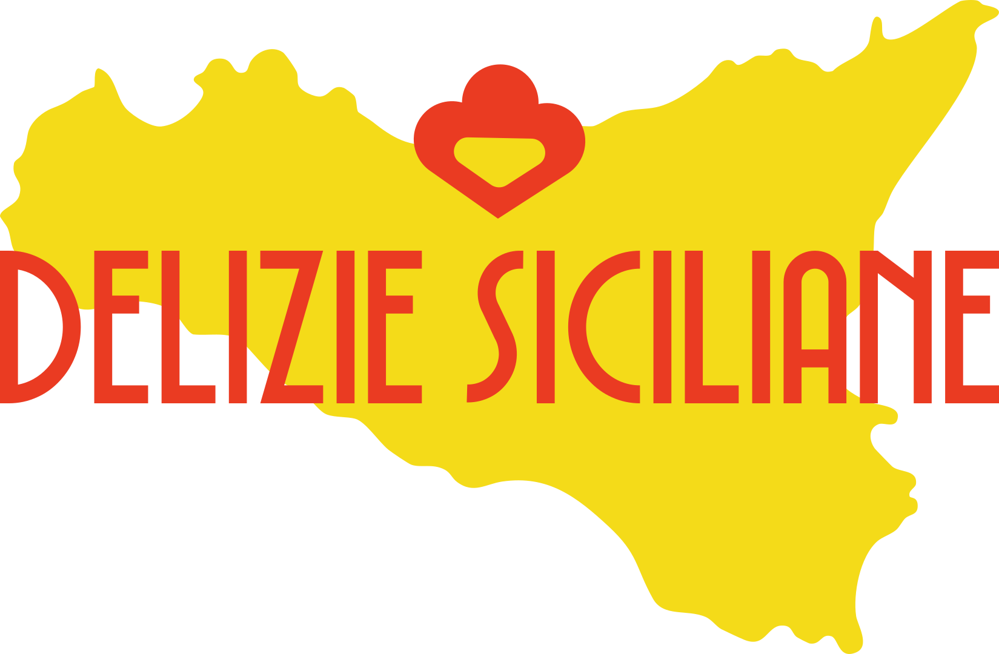

Stiamo preparando qualcosa di bello.
Sicilia bedda, a casa tua.
Il nostro laboratorio è al lavoro: cannoli, cassate, pasta di mandorla e tutta la tradizione siciliana stanno per arrivare anche online. Torna a trovarci a breve — sarà dolcissimo.
Delizie Siciliane
Ariano Irpino (AV)
Spedizione refrigerata in tutta Italia